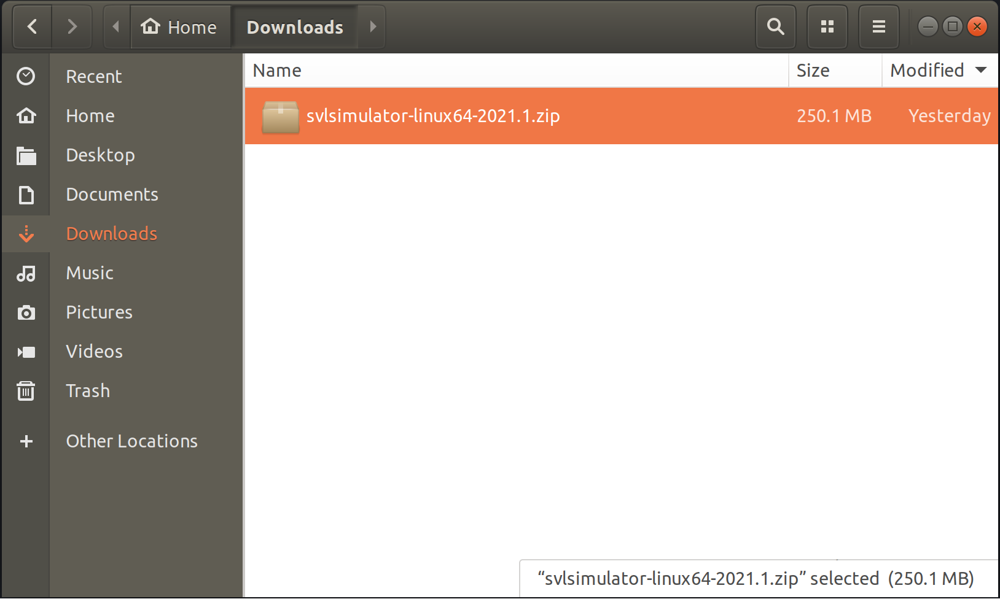
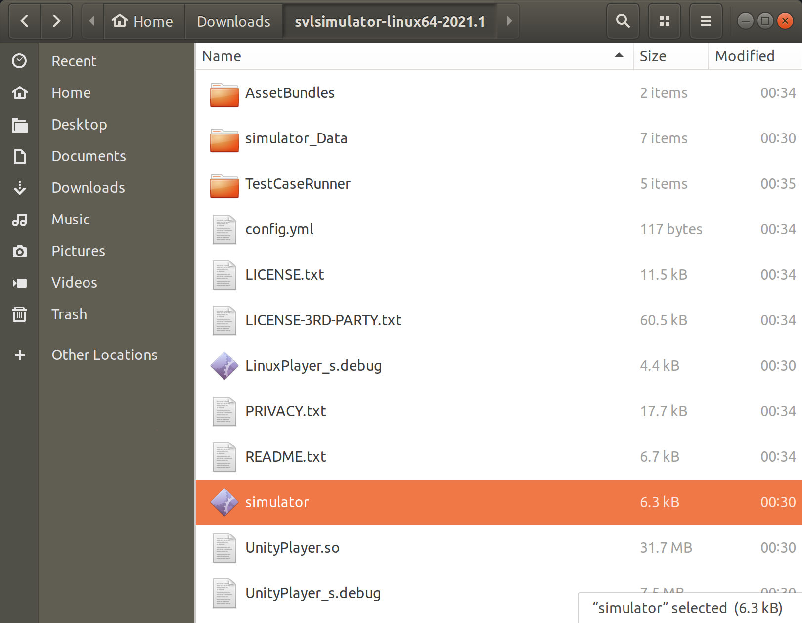
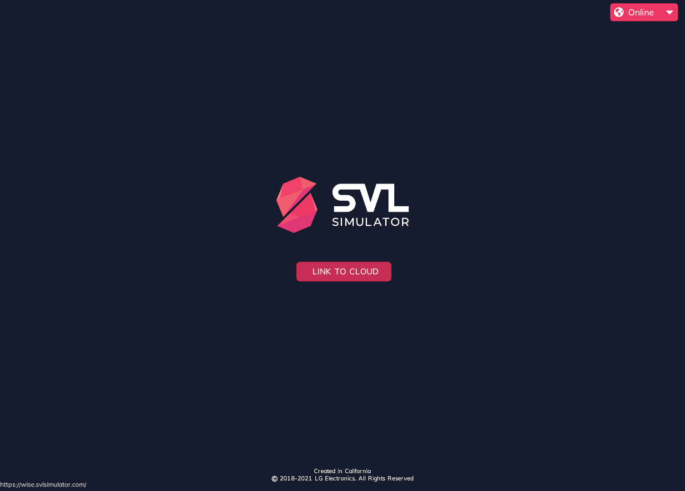
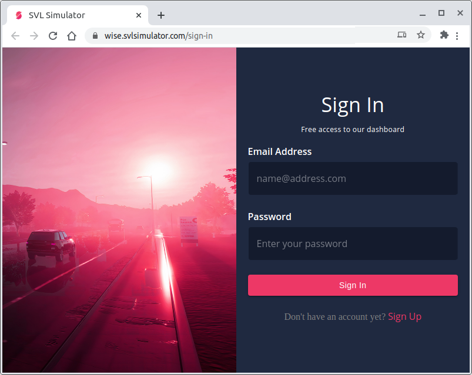
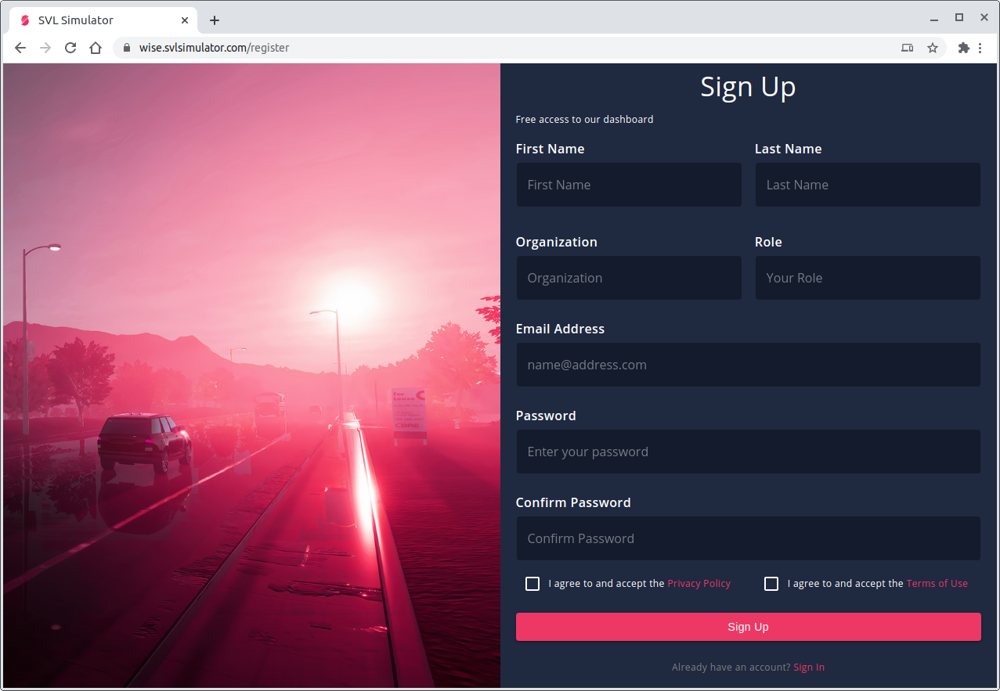
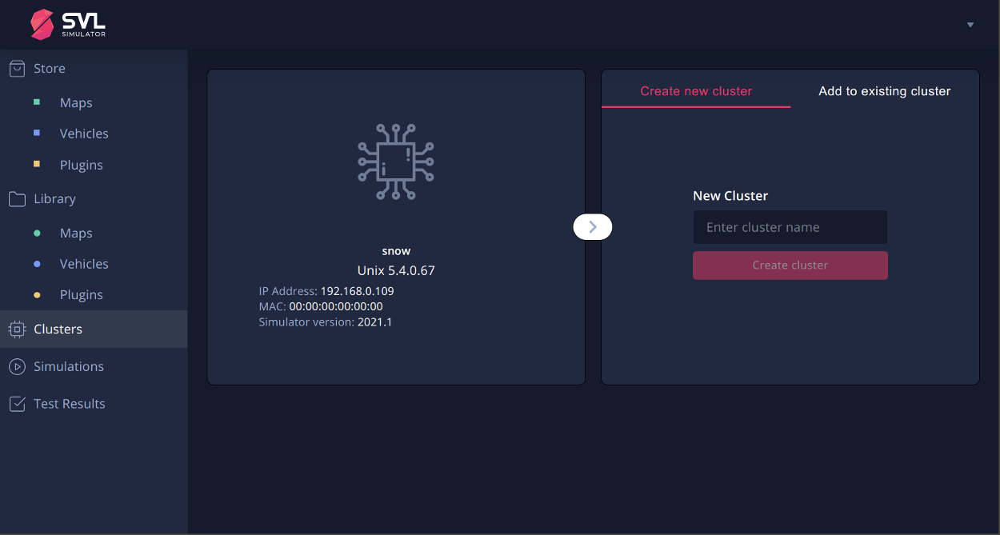
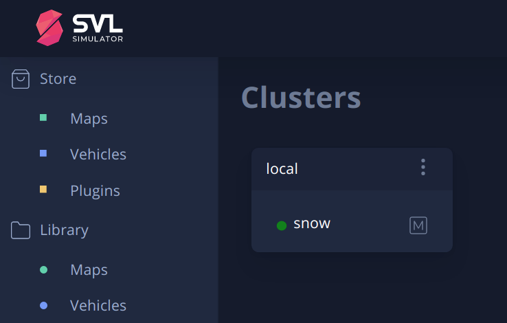
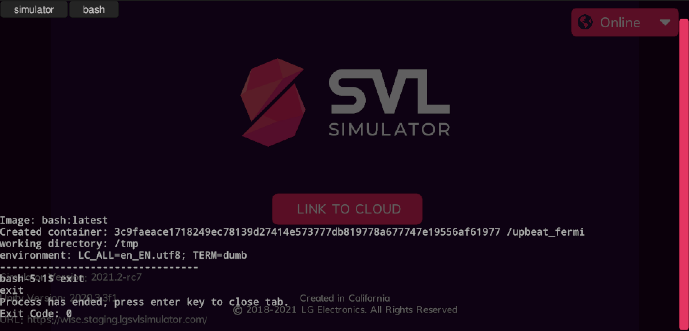

Installing the SVL Simulator#
Table of Contents
Graphics Drivers top#
Windows top#
- Download driver manually from NVIDIA's website and install.
Linux top#
You can check if the NVIDIA drivers are already installed, and their version by running in terminal:
$ nvidia-smi
The output should be similar to:
+-----------------------------------------------------------------------------+
| NVIDIA-SMI 450.57 Driver Version: 450.57 CUDA Version: 11.0 |
|-------------------------------+----------------------+----------------------+
| GPU Name Persistence-M| Bus-Id Disp.A | Volatile Uncorr. ECC |
| Fan Temp Perf Pwr:Usage/Cap| Memory-Usage | GPU-Util Compute M. |
| | | MIG M. |
|===============================+======================+======================|
| 0 GeForce GTX 108... Off | 00000000:01:00.0 On | N/A |
| 0% 36C P8 11W / 280W | 202MiB / 11169MiB | 0% Default |
| | | N/A |
+-------------------------------+----------------------+----------------------+
+-----------------------------------------------------------------------------+
| Processes: |
| GPU GI CI PID Type Process name GPU Memory |
| ID ID Usage |
|=============================================================================|
| 0 N/A N/A 1942 G /usr/lib/xorg/Xorg 114MiB |
| 0 N/A N/A 2292 G /usr/bin/gnome-shell 84MiB |
+-----------------------------------------------------------------------------+
If you do not have the latest NVIDIA drivers installed, then install the drivers for your system. For example:
-
Run
ubuntu-drivers devicesto check the highest supported driver version for your system:== /sys/devices/pci0000:00/0000:00:01.0/0000:01:00.0 == modalias : pci:v000010DEd00001B06sv00001462sd00003607bc03sc00i00 vendor : NVIDIA Corporation model : GP102 [GeForce GTX 1080 Ti] driver : nvidia-driver-435 - distro non-free driver : nvidia-driver-390 - distro non-free driver : nvidia-driver-450 - third-party free recommended driver : nvidia-driver-440 - distro non-free driver : xserver-xorg-video-nouveau - distro free builtin ... -
Install the appropriate driver:
$ sudo apt install nvidia-driver-450
Vulkan Drivers top#
Make sure the Vulkan userspace library is installed:
$ sudo apt install libvulkan1
NOTE: If you also have mesa-vulkan-drivers installed (e.g. for Intel motherboard video) they can prevent the simulator from being able to access your NVIDIA GPU. If the simulator crashes when starting, try removing the mesa vulkan drivers:
$ sudo apt remove mesa-vulkan-drivers
Installing the simulator top#
The Simulator release can be downloaded as a prebuilt binary from the simulator distribution.
-
Download and extract the simulator binary zip file for your OS to a desired location.
- For Linux: svlsimulator-linux64-{release-version}.zip
- For Windows: svlsimulator-windows64-{release-version}.zip

-
Enter the svlsimulator-{operating-system}64-{version-number} folder and run the executable application named simulator (simulator.exe on Windows) by double-clicking it.

Link to Cloud top#
When the SVL Simulator program launches, it will connect to the SVL Simulator Cloud.
-
Click Open Browser to open the simulator user interface in a web browser.
If the Link to Cloud button is not available, check in the upper right corner to see if the simulator is Online or Offline. If offline, click the Offline button to re-connect the simulator to the cloud, then click Link to Cloud.

-
You should arrive at the SVL Simulator Sign In page.
If you already have an account, you can use your credentials to sign in.
If you don’t already have an account, click Sign Up to create an account.

To create an account, fill out the Sign Up form.
You will need to confirm your email address to be able to continue.
Click the "Verify email" link in the "Complete registration" email.
If you don't receive the confirmation email, please check your spam filter or add "contact@svlsimulator.com" to your approved senders list.

-
After signing in (or signing up), you will be logged in and are almost ready to start creating and running simulations. Before you can create a simulation, you'll need to link your local simulator instance to your cloud account.
You should now see the Clusters view, where you need to enter a cluster name (e.g. "local-sim") for your local machine which is running SVL Simulator and click Create cluster.
If you wish to link additional machines into a cluster for distributed simulation, refer to Clusters Tab for more information.

If you don't see the New Cluster form or get an error when Creating the Cluster, your running simulator may be offline. Return to the SVL Simulator program window and click the Offline button to re-connect the simulator to the cloud, then click Link to Cloud to return to the Clusters view. You should now be able to enter a name for your local machine (e.g. "local-sim") and click Create cluster.
-
At this point your local machine should now be linked to the cloud in your new default ("local-sim") cluster.

You are now ready to run simulations. Follow the instructions in Running the Simulator to run your first simulation.
Docker top#
Docker v20.10 or later must be installed on Linux or the latest version of Docker Desktop for Windows must be installed in order to run local simulations that use the Python API or VSE runtime templates.
Installing Docker under Linux top#
Follow the Docker installation instructions to install Docker.
Alternatively, since Docker v20.10.7 is now supplied by the package docker.io available for 18.04 and 20.04 from the Ubuntu package repos, installation can be done with:
sudo apt update && sudo apt install --no-install-recommends docker.io
Installing Docker under Windows top#
Install Docker Desktop using the installation binary from the docker site.
Testing docker integration top#
You can test Docker integration by pressing the ESC key to open the console and entering
$ bash
Simulator should start pulling, extracting and running the bash image from docker hub. After you see the bash prompt, you should be able to type exit to terminate the shell and then the Enter to close the console tab.
